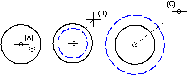

Scale an element
-
Select one or more elements.
-
Choose the Scale command .
-
If you want to copy the scaled elements, click the Copy button on the command bar.
-
Click where you want the scale origin to be (A). The software displays a crosshair at the scale origin, and dynamically displays a line between the scale origin and the cursor.

-
Move the cursor until the elements are the size you want (B, C), then click.
-
You cannot use the Scale command to scale or scale and copy elements in a drawing view because a scale factor has already been applied to the drawing view.
-
Relationships within the selection set are maintained if the relationships are still applicable after the elements have been scaled.
-
You can click the Scale command before you select elements to scale.
-
Instead of clicking to define the new scale, you can use the Scale Factor box on the command bar.
-
Instead of using the Copy button on the command bar to scale and copy, you can hold the Ctrl key while you click to define the new scale.
-
You can use IntelliSketch with this command.
-
You can use the Step box on the command bar to make the Scale Factor increase or decrease incrementally as you move the mouse.
-
You can use the Reference box on the command bar to change how the command dynamics correspond to the Scale Factor.